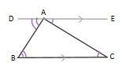
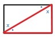
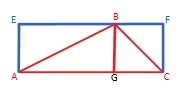
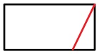

Angles Sum to 180

- ∠ DAB + ∠ BAC + ∠ CAE = 180°Euclid's Elements Book 1 Proposition 13
- and ∠ EAC = ∠ BCA and ∠ DAB = ∠ ABC (Eculid's Elements Book 1 Proposition 29)
- ∴ ∠ ABC + ∠ BCA + ∠ CAB = 180°
Half a Rectangle

Euclid's Elements Book 1 Proposition 28: Angle-Side-Angle
Similar Triangles
Definition: trianges with proportional sides
Two Triangle with the Same Angles are Similar
https://byjus.com/maths/basic-proportionality-theorem https://byjus.com/maths/criteria-for-similarity-of-triangles/Area

= 1/2 area of AEBG + 1/2 area of GBFC
= 1/2 area of AEFC
= 1/2 AE x AC
= 1/2 BG x AC
= 1/2 base x height
Types:
Isosceles Triangles:
Definition:
Two sides of equal length
Properties:
The angles opposite the equal sides are equal (Euclid's Elements: Book1, Proposition 5)
Equilateral Triangles
Right Angle Triangles
Pythagorian Theorem
Trigonometry (etymology: trig = triange, metry = measurement
h2>Opposite sides of a Rectangle are equal in length- formally, based on:
- parallel lines are equi-distant (definition of parallel lines)
- shortest distance between a point and a line is perpendicular to line (based on Pythagorian Theorem


- Eygptians measured plots of land in strips of 1 cubit by 100 cubits[1]
References
[1] Michael. (I.4) Side-Angle-Side, Euclid's Proof. Mathematics Online. Available at: https://wwmay'apw.youtube.com/watch?v=sk2dL_kitcE". Accessed August 20, 2023.
[2] M R McCafferty. Euclid's Elements Book 1: Proposition 4, Side Angle Side. Euler's Academy. Available at: https://www.youtube.com/watch?v=GP6K-2nvZ-Q&list=PL2V76rajvC1I2TrbPMRLcTqhdcbha4sDE&index=5" . Accessed August 20, 2023.
[3] M R McCafferty. Euclid's Elements Book 1: Proposition 26, Angle Side Angle. Euler's Academy. Available at: https://www.youtube.com/watch?v=8mNSNpVva8Q&list=PL2V76rajvC1I2TrbPMRLcTqhdcbha4sDE&index=27" . Accessed August 20, 2023.
[4] M R McCafferty. Euclid's Elements Book 1: Proposition 5, Isosceles Triangles. Euler's Academy. Available at: https://www.youtube.com/watch?v=zxxtF5BkcOw . Accessed August 20, 2023.
[5] M R McCafferty. Euclid's Elements Book 1: Proposition 7, Side Side Side Theorem 1. Euler's Academy. Available at: https://www.youtube.com/watch?v=iB_8u9-pVZ8 . Accessed August 20, 2023.